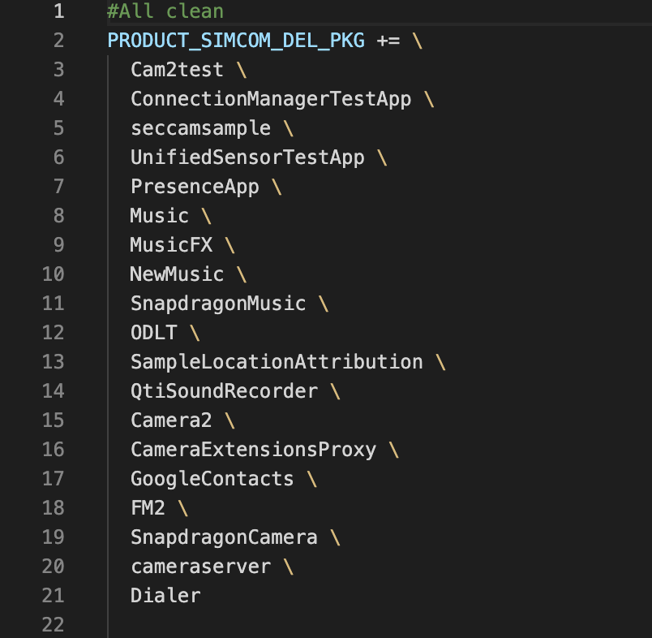

SIM866X_BOOT Start Speed Optimization User Guide
Version History
| versions | date | author | remark |
|---|---|---|---|
| 1.00 | 2026.03.04 | Zhang Haifeng | The first version |
1 Scope of application
This document applies to Android11 version of SIMCom SIM866X series.
2 presents
2.1 Purpose of this article
This document provides SIM866X Android 11 platform startup optimization scheme and further optimization modification method. By referencing this application documentation, developers can quickly understand and develop related businesses.
3 System Application Clipping
In the Android Build System, a system application clipping framework has been added to clip redundant system applications in a unified location.
3.1 System Application Clipping Framework
The requested URL/make/target/product/simcom_all_clean_product.mk was not found on this server. It reads as follows:

If a new app needs to be cropped, simply continue adding the NAME of the cropped app in the PRODUCT_SIMCOM_DEL_PKG field in simcom_all_clean_product.mk, as formatted.
4 system language tailoring
The languages supported in the system are tailored, and the system language resources are distributed in two system files, Languages_default.mk and locale_config.xml.
4.1 languages_default.mk content clipping
build/make/target/product/languages_default.mk
Delete redundant language, leaving only needed language

4.2 Locale_config.xml Content Clipping
frameworks/base/core/res/res/values/locale_config.xml Delete redundant language, leaving only needed language

Full language information:
Support for these 19 languages
Chinese zh_CN
5 Launcher starts early
5.1 Opening USAP
Starting with Android Q(10), Google introduced a new mechanism: USAP(Unspecialized App Process). A batch of processes are created in advance by prefork, and when an application is launched, the already created processes are directly assigned to it, thus eliminating the action of fork, so performance can be improved.
The requested URL/make/target/product/simcom_all_clean_product.mk was not found on this server.

5.2 Launcher Add Properties
The application-level directBootAware attribute means that all components in the application are marked as crypto-aware. The defaultToDeviceProtectedStorage property is used to redirect the default app storage location to DE storage space instead of CE storage space. Without this attribute, the app will only launch after the user unlock state.
Add to AndroidManifest.xml in Launcher app.
5.3 BootAnimation closes early
Add SystemProperties.set("service.bootanim.exit", "1") to onWindowsDrawn method in ActivityRecord.java; If you need to delay the launcher display, you can add this code content after this process. The requested URL/system/default/system/images/base/default/jquery.jpg was not found on this server. ActivityRecord.java

6 Bootchart installation and use
6.1 Installation of bootchart under Ubuntu
There are two tools that need to be installed: bootchart and pybootchartgui. sudo apt-get install bootchart sudo apt-get install pybootchartgui
6.2 Enable bootchart
adb shell touch /data/bootchart/enabled
6.3 Capture Bootchart
Manually perform an adb reboot to restart the device After booting, you will find the following files generated in the/data/bootchart/directory:
adb shell ls -l data/bootchart/ total 4792 -rw-rw-rw- 1 root root 0 2018-03-13 10:58 enabled -rw-rw-rw- 1 root root 1115 1970-02-02 00:32 header -rw-rw-rw- 1 root root 180357 2018-03-13 11:18 proc_diskstats.log -rw-rw-rw- 1 root root 4635657 2018-03-13 11:18 proc_ps.log -rw-rw-rw- 1 root root 80531 2018-03-13 11:18 proc_stat.log
Execute scripts in android source code: ./ system/core/init/grab-bootchart.sh, which generates bootchart.png in the directory where the command was executed
According to Bootchart, each histogram is a process, and the order in which the process starts at different times. CPU and IO resource usage of different processes and total CPU usage and IO usage.